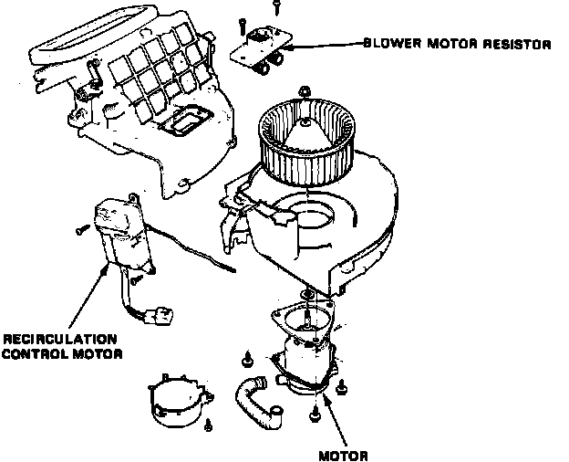
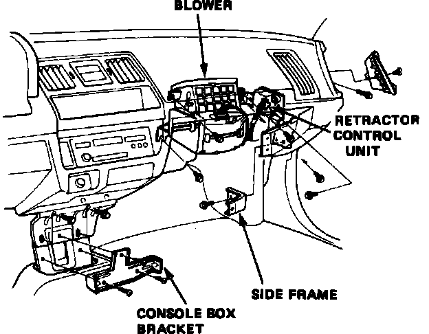
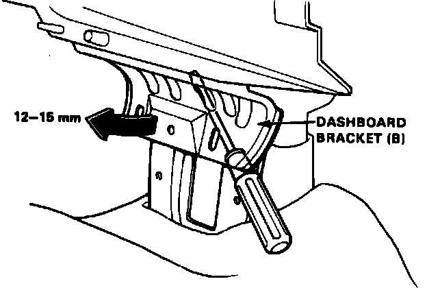

Blower Motor: Service and Repair
Less A/CFig. 10 Exploded View Of Blower Housing Assembly:

1. Disconnect battery ground cable.
2. Remove glove box, glove box frame and blower duct.
3. Disconnect electrical connector from blower motor.
4. Remove three housing retaining bolts and the housing.
5. Separate blower housing and remove impeller from motor shaft, Fig. 10.
6. Remove motor mounting screws and the motor.
7. Reverse procedure to install.
With A/C
Fig. 11 Blower Housing Installation:

Fig. 12 Aligning Instrument Panel Bracket To Allow Component Removal:

1. Disconnect battery ground cable.
2. Remove glove box and glove box frame.
3. Remove two bolts securing headlamp retractor control, the control and bracket, Fig. 11.
4. Remove center console as follows:
a. Raise parking brake lever and, on manual transaxle models, remove shift knob.
b. Pry up screw covers from front and rear of brake lever housing, then remove retaining screws.
c. Remove two retaining screws from each side of console, then the console assembly.
5. Remove console box bracket.
6. Remove bolts securing instrument panel lower bracket to bracket B, Fig. 12, then pry instrument panel bracket forward approximately 1/2 inch to provide clearance.
7. Loosen sealing band on right side of housing and disconnect electrical connector from blower motor.
8. Remove three bolts securing blower housing and the housing, Fig. 11.
9. Separate blower housing and remove impeller from motor shaft, Fig. 10.
10. Remove motor mounting screws and the motor.
11. Reverse procedure to install.